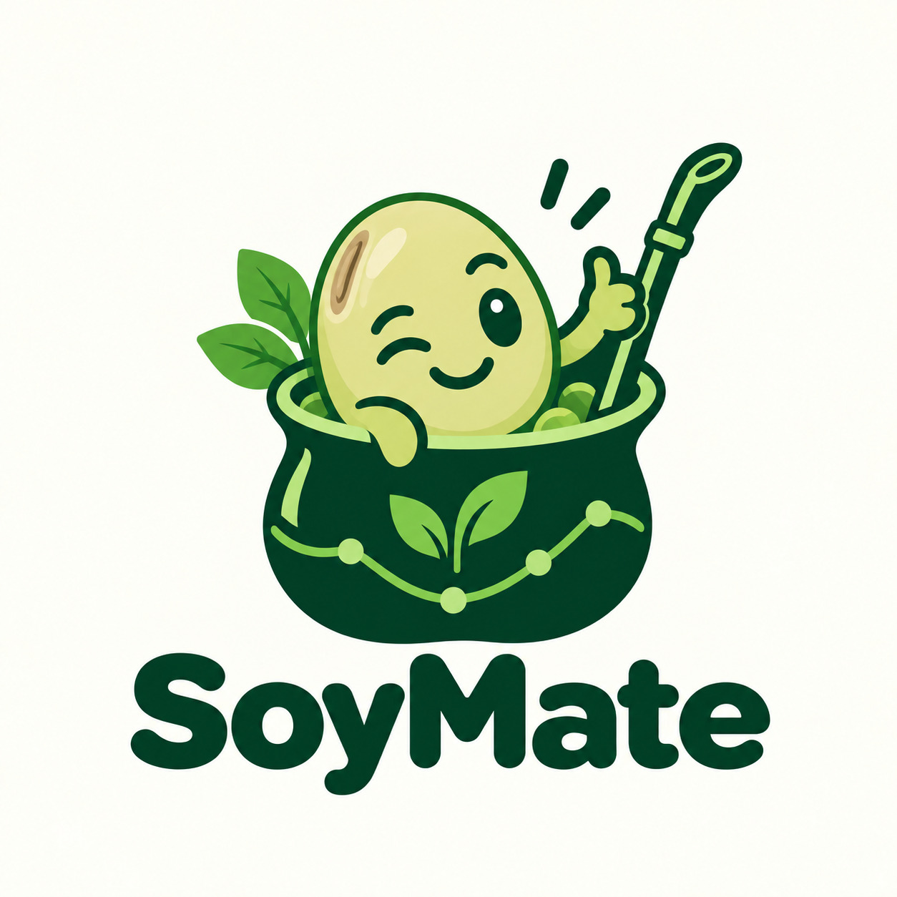
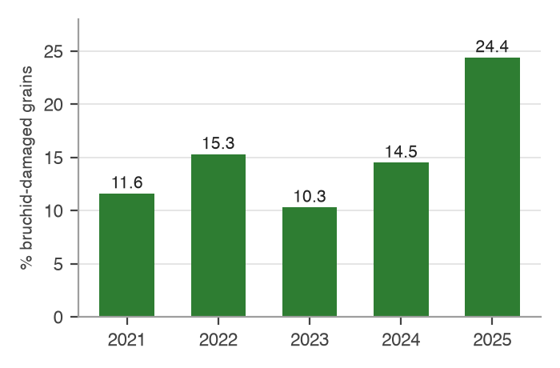
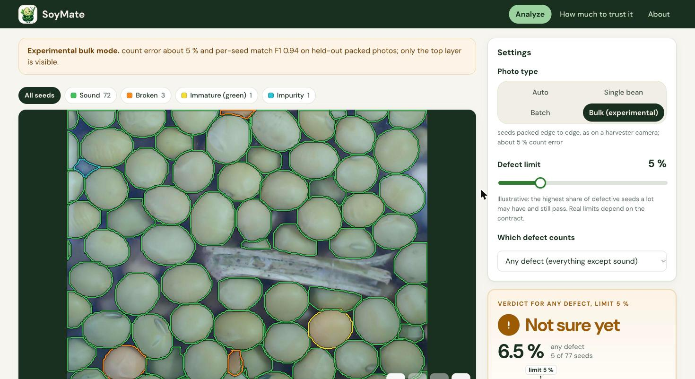

Hack the Fork Paris
Track 3: protein sovereignty
A seed grade from a phone photo,
that the farmer can check too.
Federico Bello · Juan Pedro Maestrone · Pedro Pertusso
soymate.team@gmail.com
The problem
1 seed in 4
had a beetle hole in an average truckload of French lentils, the worst year since the survey began in 2021
From 1 % to 75 %
some truckloads were almost clean, others had 3 seeds in 4 damaged
Bruchid: a small beetle. Its larva grows inside the seed and leaves a round hole when it comes out.

Source: Terres Univia / Terres Inovia, lentil seed quality survey, harvest 2025: mean 24.4 % damaged seeds per lot, 40 lots measured, range 1.0 to 75.5 %.
The problem
When a truck arrives, someone spreads a few hundred seeds on a table and counts the bad ones.
Two people, or two sites, can give the same truck a different grade, especially in the harvest rush.
They learn the result when they deliver, with no photo or record to look at.
Sources: Codex standard CXS 171 (“visual examination”); LABOSEM 2022 (200-500 seeds); Farm Online 20/3/2025 (graders differ “from person to person”). Third card: our reading.
The problem
~550 €
per tonne: the difference between lentils sold for people to eat and seeds sold as animal feed
Up to 5-8 M€
of damaged lentils removed and lost in 2025, a cost that lands on farmers (our estimate, a maximum)
38,000 t
more lentils imported than exported by France in 2024/25, mostly from Canada
Sources: FranceAgriMer producer prices (806-873 €/t); CRIT Grand Est 2025 (feed 200-260 €/t); Terres Univia trade data. 5-8 M€ = 24.4 % × estimated harvest × ~556 €/t.
How it helps
a little in some trucks, a lot in others
damaged seeds are removed and lost
slow, uneven, and nobody can check it
the same photo count, for the farmer and the cooperative
knows the result before delivering: can clean the seeds first, choose who to sell to, or show a photo if they disagree
knows right away where each truck should go, and every site counts the same way
fewer arguments: one method, one photo per truck
We don’t stop the beetle. We make the count fast, the same everywhere, and visible to both sides.
Why soybean first
| Soybean | Lentil | |
|---|---|---|
| Public photos of damaged seeds | yes, about 8,000 | none found |
| Eaten by people in France | 45,000 t a year (tofu, soy drinks) | almost the whole harvest |
| Quality problem in 2025 | 1 lot in 3 had too many unripe seeds | 1 seed in 4 damaged (average truckload) |
| Extra value when sold to eat, not as feed | 20 to 70 € per tonne | ~550 € per tonne |
So we use soy to build and test the method, then bring it to lentils, where getting the count right is worth 8 to 25 times more per tonne.
Sources: Mendeley datasets d97rjyk2tz and v6vzvfszj6; FranceAgriMer oilseed sheet 2026 (45 kt); Terres Inovia soy and lentil quality sheets 2025; Terres Univia price observatory (soy gap “très faible”), Terres Inovia 2024 (~70 €/t).
What we built
1
one phone photo: seeds spread on a tray, or packed
2
every seed is outlined, touching ones too
3
each seed: sound, broken, stained, unripe, hole, or foreign material
4
share of each with its range: pass, not sure yet (add seeds), or fail

A packed lot it never saw: 77 objects found (the dataset's outlines: 80 seeds, 2 pieces of debris). 6.5 % defects, range 2.8 to 14.3 %: at a 5 % limit, "not sure yet".
Seeds found by colour segmentation (spread) or FastSAM (packed, experimental); each seed classified on frozen DINOv2 features. A few seconds per photo on a CPU.
Live demo
a farmer's photo: all 164 seeds found, 18 broken (11 %), so it fails a 5 % limit
a single seed with a defect: insect hole, 100 % sure, the same as the dataset's label
Try it live: 18.206.176.19, on any phone or laptop, examples included
Is it a solution?
1
checked by expert graders. In our tests, 50 local seeds per type scored 0.93; 1,000 from another dataset scored 0.52
2
about 1,000 seeds (a few photos), so the result is within 3 points
3
the way grain inspectors test any machine before they trust it
4
to check it really changes decisions: fewer disputes, trucks sent to the right place
Sources: our transfer test between two soybean datasets (R3, sound vs broken, macro F1); USDA grain inspection notice PN-26-03; binomial ranges at lentil damage levels.
Why it can last
in Australia, grain buyers use a company (Cropify) that grades lentils with AI
the French leader (Inarix) only grades cereals like wheat and barley
lentils sold to eat are worth ~550 € more per tonne than animal feed
just a phone: no machine to buy or install
Sources: ChannelLife 20/8/2026 and Stock Journal 4/9/2026 (Cropify; judged worth “commercial consideration” by Grain Trade Australia); Meta AI blog 6/12/2024 and inarix.com.
Next step
A pilot that measures whether a grade both sides can check changes decisions and protects farmer income.
Thank you
Federico Bello · Juan Pedro Maestrone · Pedro Pertusso
soymate.team@gmail.com
Demo: 18.206.176.19 · Code: github.com/fede-bello/soymate